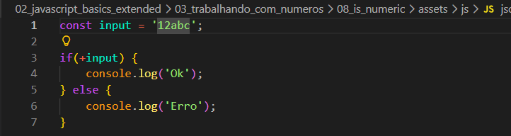
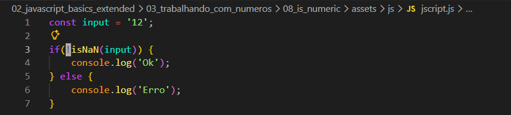
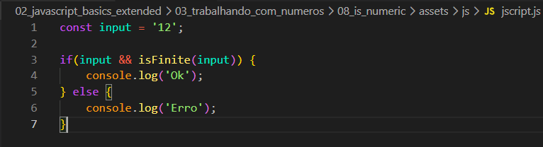
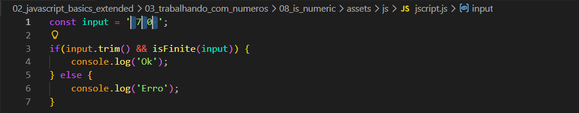

isNumeric
Intro
Aqui teremos como suposicao que desejamos receber um input de nosso usuario e queremos conferir se esse inpput é um numero.
Aqui teremos como suposicao que desejamos receber um input de nosso usuario e queremos conferir se esse inpput é um numero.
Caso seja um numero temos formas de poder validar com JS. Como exemplo iremos utilizar de uma condicional onde se for um numero sera dado resultado como ok e caso false (Erro).
Quando você usa o + antes de uma variável em JavaScript, isso se chama operador unário de soma. Ele serve para forçar a conversão de um valor para número.
Na prática, o que acontece é simples: se o valor puder virar número, ele vira. Se não puder, ele vira NaN (que significa “não é um número”). Por exemplo: um texto como "10" vira o número 10. Já um texto como "abc" não pode virar número, então vira NaN.

Muita gente usa isso dentro de condicionais para verificar se algo é número, mas isso não é 100% confiável, porque alguns valores podem enganar a verificação. Por isso, o nome correto do que você está usando não é exatamente “verificação de número”, e sim conversão de tipo usando o operador unário +. Resumindo de forma direta: você não está exatamente verificando, você está tentando converter — e depois usando o resultado dessa conversão para decidir algo.
Para solucionarmos esse problema podemos utilizar a funcao vista anteriormente isNaN(), porem para isso temos que negar nossa funcao pois isNaN() ira retornar um false caso o input (exemplo) seja um numero com isso se nao negarmos ela. Ela ira cair na vericacao de false e cair na opcao de erro. Ficando da seguinte forma:

Porem ainda temos mais uma questao que devemos levar em consideracao, se por exemplo em nossa string tivermos um Infinity, apos salvarmos nosso codigo, iremos ver que isNaN() ira retornar true para Infinity isso pois para o JS ele e tratado como um numero. Para resolver esse problema podemos utilizar de outra forma sendo: isFinite porem agora ao usar isFinite se passarmos uma string vazia, tambem tera resultado como true.
Para solucionar esse problema entao precisamos verificar se nosso input (variavel exemplo) é um valor ou pussui algum valor e depois fazer a checagem para ver se e um valor finito isFinite() e para isso podemos fazer da seguinte forma:

Porem com a forma mencionada acima ainda podemos ter um erro sendo ele, se o usuario por exemplo der 3 espacos, entao o input sera reconhecido contendo valor. Para resolvermos isso podemos chamar o metodo trim(). Ficando da seguinte forma:
